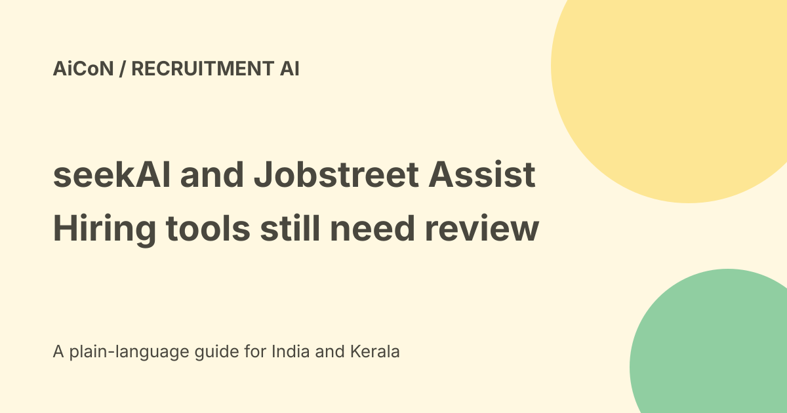

seekAI and Jobstreet Assist: hiring tools, credits and review
The Malaysia SEEK employer page describes AI support for shortlists, voice interviews and reference checks. Current Assist help and terms make an important boundary explicit: the employer retains hiring decisions, and available features depend on the purchased ad type. This is not a free universal recruiter or automatic hiring authority.

What the product page describes
Assist scores and ranks applicants against employer criteria, explains apparent fit and supports initial screening. The page also describes voice interviews and reference-check summaries.
A ranking reflects the criteria, evidence and model behaviour. It is not a verified judgement of a person's ability or permission to reject them without fair review.
Screening and reference checks
The current help page describes AI pre-screens that ask guided questions and summarise responses. It also lists automated reference checks for applicants the employer chooses.
Reference outreach involves other people and potentially sensitive information. Confirm the candidate, referee, scope and consent before initiating it. A feature description does not authorise contacting every person named in a CV.
Employer decisions remain human
Assist help says the add-on does not make hiring decisions and that decisions such as shortlisting remain with the employer.
Inspect the original application, relevant experience and evidence behind the recommendation. Give applicants an appropriate way to correct errors and make necessary accommodations.
Paid ad entitlements differ
The help page says Assist is included with Basic, Advanced and Premium Ads and can be bought as an add-on for Lite Ads.
The product terms say eligible features and credit limits depend on the purchased ad and location. Not every feature is available for every ad type. No fixed final price or India entitlement was established in the pages checked.
Credits and expiry
The terms give Assist credits a one-hundred-eighty-day validity period from the associated paid ad or add-on purchase. Unused credits cannot be extended, rolled over or transferred and are not refundable under those terms.
An upgrade resets the balance to the new limit rather than adding unused old credits. It also starts a new validity window. Read the applicable current terms and allowance before paying.
Candidate Management and ATS limits
The terms say Assist is accessed directly through the employer platform's Candidate Management, not through a recruitment software provider or applicant tracking system.
Where an ATS is used, the specified Assist path applies to candidates who used SEEK Optimised Apply and appear in Candidate Management. Do not assume every externally collected applicant is available to the same tools.
A careful employer evaluation
- Confirm the country, account and purchased ad type.
- Read the actual eligible features and credits.
- Use job-relevant, clearly stated criteria.
- Review ranking explanations against applications.
- Test errors and missing information on approved examples.
- Explain screening and data handling to candidates.
- Select reference checks only with the required consent.
- Keep hiring and rejection decisions with authorised people.
- Track outcomes, bias concerns and credit consumption.
No ad was purchased, candidate interviewed, CV uploaded or reference request sent here.
Company scale figures are not fairness proof
The product page reports more than seven hundred fifty million employment signals daily and experience across a large APAC marketplace.
These are company claims about scale. A large dataset does not prove equal treatment across accents, disabilities, languages or career histories. Validate the actual job and applicant population.
Privacy and candidate rights
Applications and references can contain employment, identity and personal details. Use only the data needed for the role and follow applicable employment and privacy rules.
Do not circulate interview recordings or a negative reference beyond the authorised hiring audience. Review retention, access and correction options before using automated screening.
India and language boundaries
The checked product page is Malaysia-specific. It does not prove every feature is live in every APAC country, available to an India recruiter or equally accurate in Malayalam.
Check the actual local account, supported languages and feature rollout. A global SEEK brand or employer website is not a universal entitlement.
Purchase and withdrawal costs
The product terms say committing to a purchased ad or add-on creates the stated payment obligation even if withdrawal is later requested. Multiple locations can be separate paid ads.
Review the total, duration, feature allowance and cancellation terms before purchase. No paid commitment was made for this guide.
What changed since the original post?
We replace broad all-APAC access and automatic-hiring implications with local ad entitlements, credit expiry, direct-platform restrictions and the employer's retained decision role.
Frequently asked questions
Does Assist hire people by itself?
The help page says hiring decisions remain with the employer.
Are credits unlimited?
No. Limits depend on ad type and credits expire.
Was an interview tested?
No.
Sources: Malaysia AI product page · Official Assist add-on help · Current employer product terms. Checked 7 October 2026.